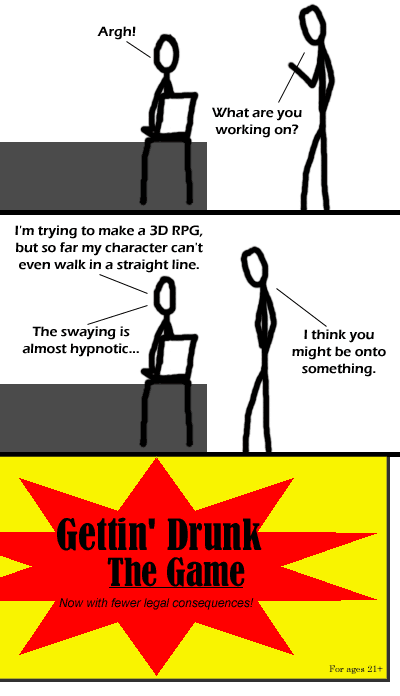

Comic JK 123
When I Feel Like It
⇤
<
?
>
⇥

⇤
<
?
>
⇥
Forum
.
RSS
.
Digg
.
Facebook
.
Reddit
.
Twitter
.
Stumbleupon
Ha, that's just like the gaming industry, specifically Blizzard. Always years behind, I been getting drunk as a game for years.....why does my liver hurt? Why is Blizzard of all companies supposed be years behind? >Not that, just that their development times are infamously long. I just lost The Game. >I won it. >>if you want to win the game visit xkcd.com/391/ Alt text is awesome :D lol For ages 21+???? what kind of miserable country would be so cruel to its inhabitants? *sob* i like having a legal drinking age of 18, lol >Yeah I know, i'm not 18 but i still drink ;) ^The USA, that's what kind of country would be so cruel. NOOOOOO Why would I watch virtual drunkenness when I can just go to your anus's place, where she's always wasted?